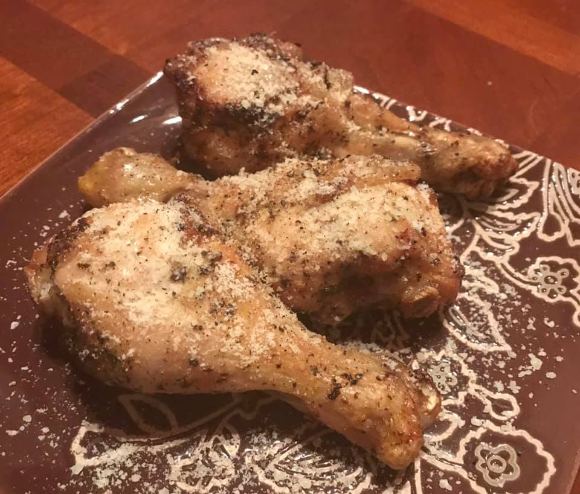

Chicken Drumsticks

- Serves: 2
- Prep time: 10 mins
- Cook time: 20-45 mins
Ingredients
- 6 chicken drumsticks
- 1 tbsp avocado oil or rendered bacon fat
- Salt and Pepper
- 1/4 cup grated Parmesan cheese
Instructions
- If using a conventional oven, preheat oven to 425 degrees
- Combine oil, salt, and pepper in a bowl and toss with drumsticks.
- Add coated drumsticks to air fryer basked (or place on baking sheet if using conventional oven).
- If using an air fryer, set the temp to 400 and the timer to 20 mins. If using a conventional oven, bake in preheated oven for approximately 40 mins.
- As with any chicken, cooking to temp is important. After specified time, use an instant read thermometer to test for doneness. Temp should read 165°F.
- Once internal temp has been reached, toss the wings with grated parmesan and serve.
Substitutions/Additions
- Wings are very versatile and there are many flavor options here. Some of my favorites are:
- 2 tbsp butter combined with 2 tbsp hot sauce (such as Franks)
- 1/2 tsp salt, 1 tsp garlic powder, and 1 tsp smoked paprika, combined with 1 tbsp melted butter
- 2 tbsp butter combined with 2 tbsp hot sauce (such as Franks), and 2 tbsp garlic powder
- 2 tbsp butter, 1 tsp curry paste or powder
- 1 tbsp butter, 2 tbsp fresh chopped herbs such as parsley, thyme, cliantro, etc.
- If you are dairy free, avocado oil or rendered bacon fat can be substituted for any butter.